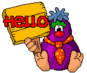

Patrick Catanzariti - @thatpatrickguy
(With the trademark blessings of Sun Microsystems)
My official web site  |
|
Your name is: |
|


Invoke and respond to devices in the real world using JavaScript
Supports 433MHz and USB devices
Order online - http://ninjablocks.com
A microcontroller that runs JavaScript.
Add it to a device to invoke and respond to events via JavaScript
Shipping in 2014 - http://tessel.io
Do it all from scratch on Arduinos
There are a bunch of JavaScript and Node frameworks for them
Go wild - http://arduino.cc
Code apps in JavaScript and share in an open ecosystem
Available already if you've got Glass:
Nope, I don't have a pair either.
Senses hand motions.
JavaScript API available!
Available online: http://leapmotion.com
For aussies, it's now at Dick Smith!
Respond to events on your Android device via JavaScript
Launch apps, change volume, bring up notifications, respond to battery life, GPS location, SMSes and more!
Available now: https://onx.ms
Still in early development
Hybrid idea between on{X} and Google Now
Available now: http://app.xndme.com/

var http = require("http"),
express = require("express"),
app = express(),
server = require("http").createServer(app);
var ninjaBlocks = require('ninja-blocks'),
ninja = ninjaBlocks.app({user_access_token:'kjhsdi78i3kj2o8ywius'});
app.get('/redon', function(request, response) {
// We'll put our code here
});
ninja.devices({device_type: 'rf433'}, function(err, devices) {
var sirens = ninja.utils.findSubDevice({
shortName: 'Red On'
}, devices);
// Next slide's code shall go here!
});
_.each(sirens, function(siren){
ninja.device(siren.guid).actuate(siren.data);
});
$('#redon').on('click', function() {
$.ajax({
type: 'GET',
url: '/redon',
success: function(data) {
},
error: function(xhr, type) {
alert('Error... ' + type);
}
});
});
function flashSiren(colour, callback) {
ninja.devices({ device_type: 'rf433' }, function(err, devices) {
var sirens = ninja.utils.findSubDevice({ shortName: colour + ' On' }, devices);
console.log(sirens);
_.each(sirens, function(siren){
ninja.device(siren.guid).actuate(siren.data);
setTimeout(function() {
ninja.devices({ device_type: 'rf433' }, function(err, devices) {
var sirens = ninja.utils.findSubDevice({ shortName: colour + ' Off' }, devices);
console.log(sirens);
_.each(sirens, function(siren){
ninja.device(siren.guid).actuate(siren.data);
});
});
});
});
if (callback) callback();
});
}
var Stream = require('user-stream'),
streamParams = {
replies: 'all'
};
// Start the stream watching my tweets
stream.stream(streamParams);
stream.on('data', function(json) {
if (json.in_reply_to_screen_name == 'thatpatrickguy') {
if (json.text.indexOf("blue") != -1) {
console.log('They said BLUE! Light it up.');
flashSiren('Blue');
}
if (json.text.indexOf("red") != -1) {
console.log('They said RED! Light it up.');
flashSiren('Red');
}
}
});
device.messaging.on('smsReceived', function (sms) {
device.ajax(
{
url: 'http://myslides.herokuapp.com/smsReceived',
type: 'POST',
dataType: "json",
data: '{"phoneNumber":"'+sms.from+'"}',
headers: {'Content-Type':'application/json'}
},
function onSuccess(body, textStatus, response) {
console.info('successfully received http response!');
notification.content = 'successfully received http response!';
notification.show();
},
function onError(textStatus, response) {
var error = {};
error.message = textStatus;
error.statusCode = response.status;
console.error('error: ',error);
});
});
device.gestures.on('nudgeLeft', function() {
device.ajax({
url: 'http://myslides.herokuapp.com/switchslide',
type: 'POST',
dataType: "json",
data: '{"move":"left"}',
headers: {'Content-Type':'application/json'}
},
function onSuccess(body, textStatus, response) {
// Yay it worked!
},
function onError(textStatus, response) {
// Function of disappointment and sadness.
});
});
device.gestures.startDetection(900000);
device.screen.on("on", function () {
device.gestures.startDetection(900000);
});
app.post('/switchslide', function(request, response) {
console.log('Switching ' + request.body.move);
io.sockets.emit('slide'+ request.body.move);
response.json({success: true});
});
socket.on('slideleft', function (data) {
console.log('Received nudge left');
console.log(data);
$.deck('next');
});
socket.on('slideright', function (data) {
console.log('Received nudge right');
console.log(data);
$.deck('prev');
});
function listen(event) {
var call = event.phrase.toLowerCase();
log.info(event);
if (call.indexOf('begin') >= 0) lightRequest = 'bubbleon';
else if (call.indexOf('stop') >= 0) lightRequest = 'bubbleoff';
else lightRequest = undefined;
if(call.indexOf('magic') >= 0 && lightRequest !== undefined ){
isVoice = true;
loop();
}
}
subscribeEvent('voice',function (etype, data){
var sdata = JSON.parse(data);
listen(sdata);
});
/
#